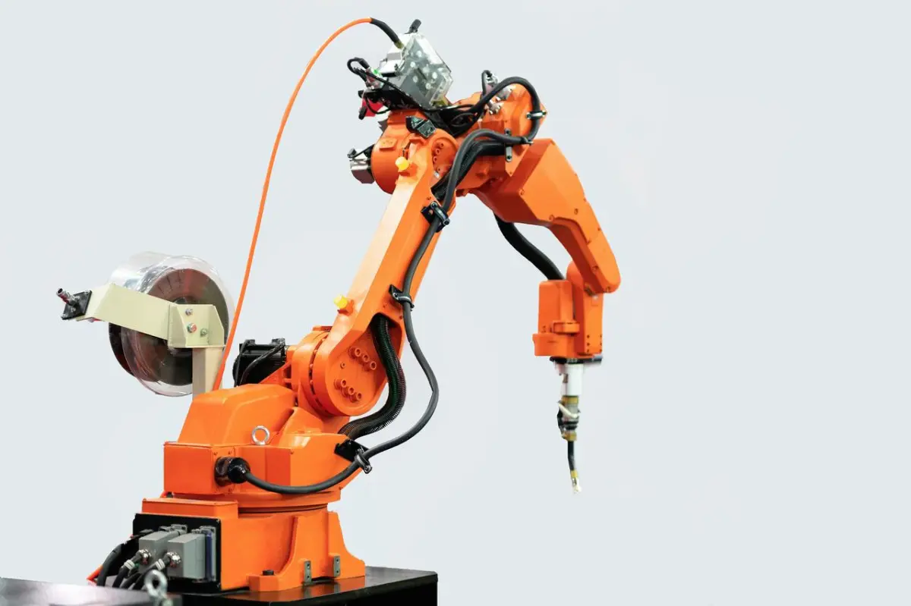
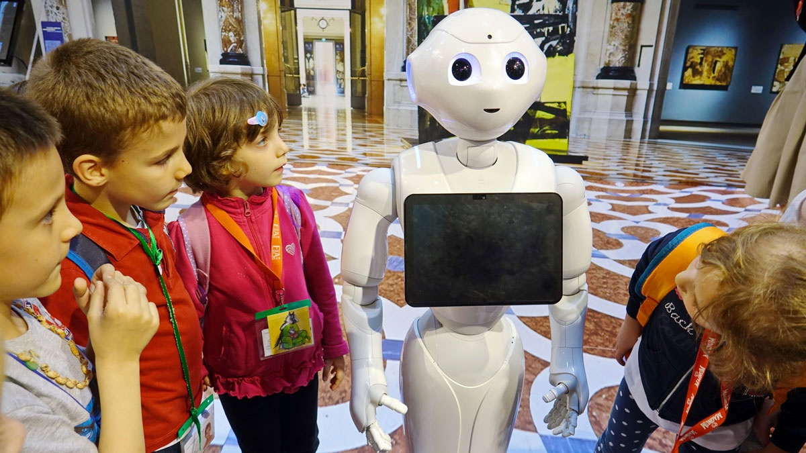

Origini antiche
Sebbene l'immagine moderna dei robot sia legata alla tecnologia contemporanea, concetti simili ai robot sono presenti fin dall'antichità. Ad esempio, nell'antica Grecia, si narra che lo scultore Talamone abbia creato statue animate e il mito di un gigante di bronzo che proteggeva Creta.

Applicazioni industriali
I primi robot industriali moderni sono stati introdotti negli anni '60. Un esempio significativo è il "Unimate", un braccio robotico sviluppato da George Devol e Joseph Engelberger. Fu installato per la prima volta in una catena di montaggio automobilistica.

Robotica sociale:
Non tutti i robot sono progettati per scopi pratici o industriali. La robotica sociale si concentra sulla creazione di robot progettati per interagire e assistere gli esseri umani nelle attività quotidiane, come compagnia per anziani o come tutor per bambini.Etica della robotica :
La robotica collaborativa sta diventando sempre più diffusa in vari settori industriali e servizi, in cui i robot lavorano fianco a fianco con gli esseri umani, piuttosto che sostituirli completamente. Questo tipo di robotica è spesso utilizzato in fabbriche, ospedali, magazzini e altri contesti lavorativi.